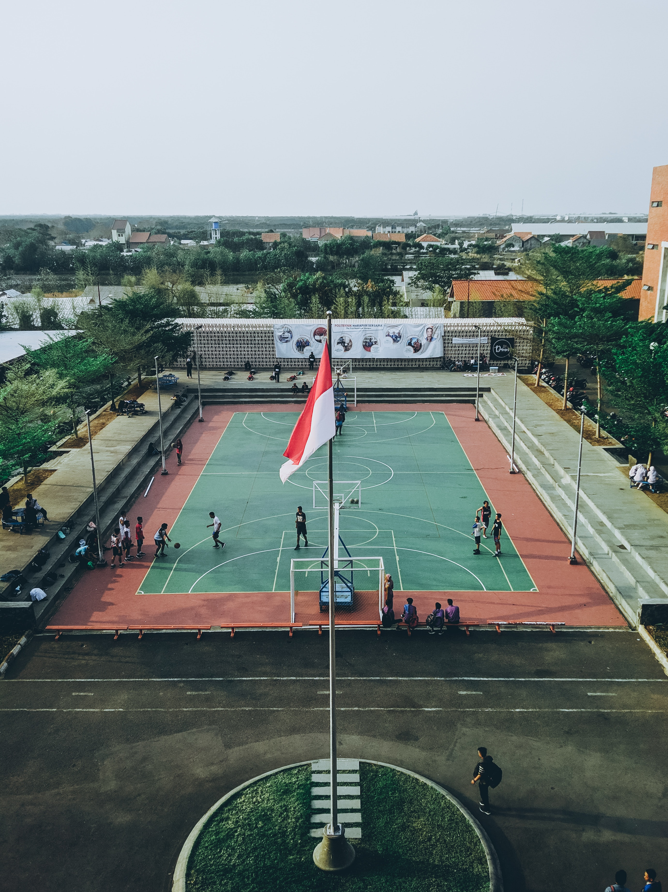
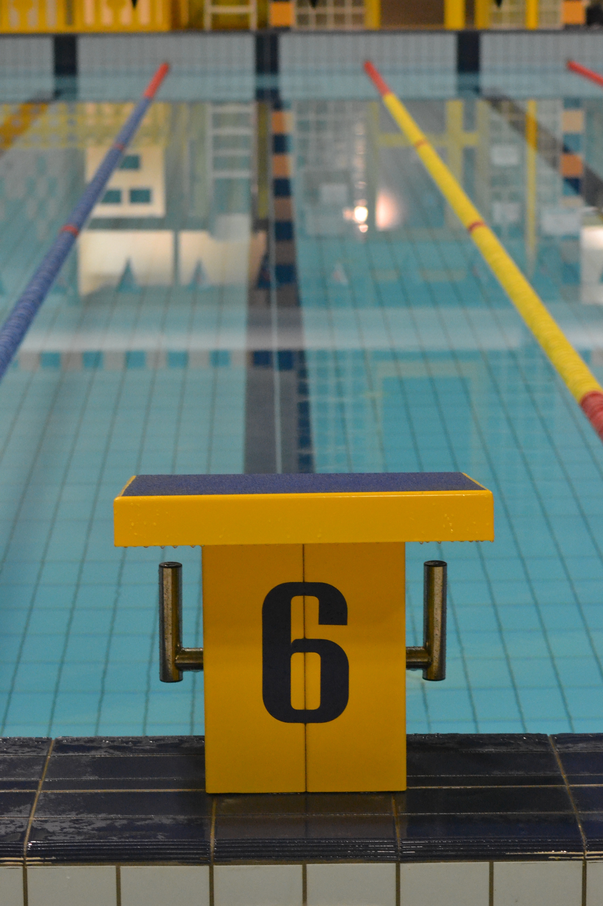

Along with education we are interested to add extra cerucular activities to students to make learning enjoyable
We provide the following activities
Centrally air conditioned library and information centre housed in B-Block first floor with carpet area of about 650 Sqm, and a seating capacity of 250. It has 30925 books with 6254 titles and also subscribes 110 national and 12 international journals and subscribed for on-line journals(IEEE). Back volumes of the journals and project reports of our students are available. Library activities has been computerized using in-built online software and using Barcode system for the Circulation of books.
Get complete information about M&G Institutions, infrastructure facilities like Library, Hostels, Transportation, Cafeteria and more.
 